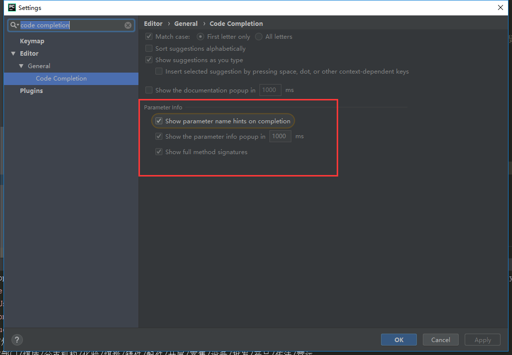
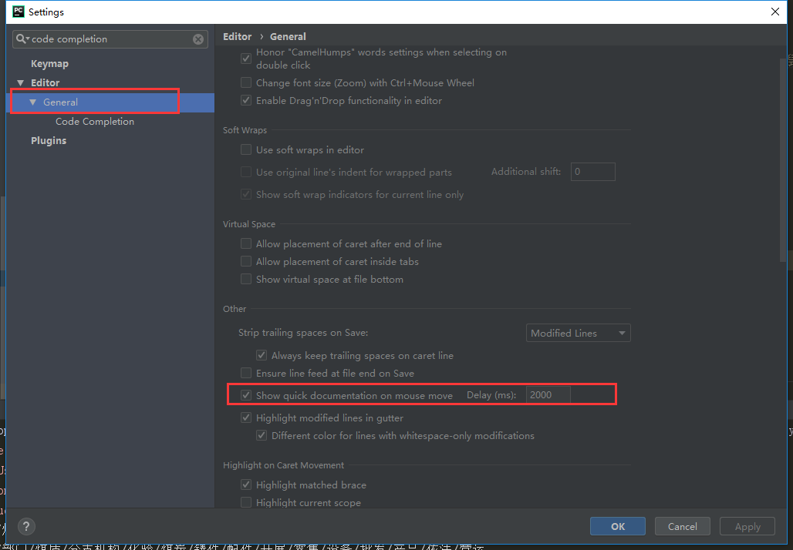

在编写python程序时，常常会遇到一些不太常见的函数，有时候又不想去百度，那么，使用pycharm设置快速显示函数的参数和用法，这个方法十分快捷方便。
step1. file -> settings 进入设置，在搜索栏搜索“code completion”
下图所示方框内全部勾选：

step2. 点击“General”，然后将红色方框内的选项勾选。显示快捷文档在鼠标悬停的地方，后面有个可填参数，就是你悬停多久之后会显示，单位毫秒。
